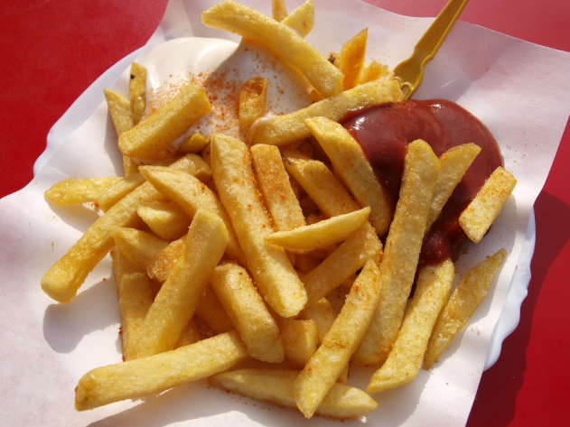

French Fries
Homepage

Why order fast food french fries when you can make your own? This recipe is as tasty as those that you get from the restaurants. Quick and easy to make. Enjoyable by itself or other foods.
Ingredients
- 2 1/2 pounds of peeled russet potatoes
- 1 cup vegetable oil. Used for frying.
- 1 cup all-purpose flour
- 1 teaspoon garlic salt
- 1 teaspoon onion salt
- 1 teaspoon paprika
- 1 teaspoon salt
- 1/2 cup water
Directions
- Slice potatoes into fries.
- Then place into bowl of cold water. Prevents them from turning brown.
- Heat oil in large skillet to 350 degrees F.
- While oil heating. Sift flour, garlic salt, onion salt, paprika, and salt into large bowl.
- Gradually stir water to make slightly thick batter.
- Drain and dry the fries. Dip into batter one at a time in the oil.
- Fry until golden brown and crispy. 7 to 10 minutes. Drain on paper towel.